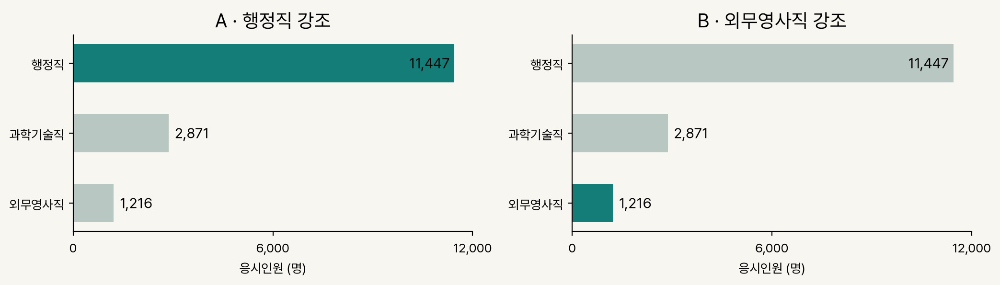
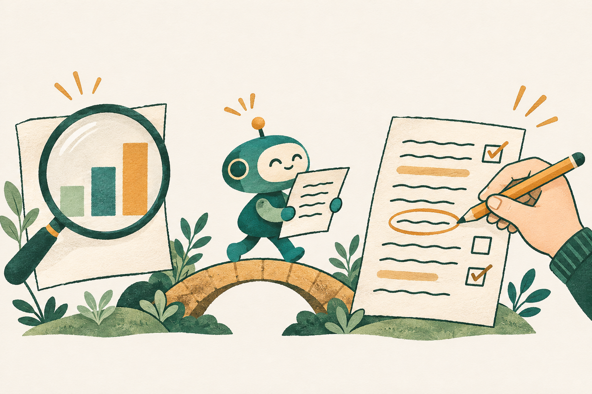

질문을 정하고, 자료와 맞추고, 우리 글로 고쳐 공유해요
한국 R사용자회 이사
써본 경험
과제나 공부에서 어떤 도움을 받았나요?
대화하는 AI
ChatGPT · Gemini에서 글을 부탁해 봤나요?
파일을 다루는 AI
Claude Code · Codex로 파일을 만들거나 고쳐 봤나요?
수업용 가상 팀 과제예요
지민
“2026년 국가공무원 7급 시험 현황으로 팀 보고서 쓰자.”
나
“7급은 어느 분야가 인기야? 그걸로 보고서 써보자.”
수아
“행정직에 사람이 많다던데, 거기가 제일 인기 있는 거 아냐?”
이번 보고서의 질문
올해 7급 공채는 어느 분야가 인기 있을까요?
일반 독자에게 설명할 팀 보고서
질문·메모 서론 초안 표·차트·문장 수정·공유
요청을 구체적으로
Identity·Instructions·Examples·Context를 담아요.
자료와 글을 대조
숫자와 표현이 맞는지 살펴요.
우리 선택을 기록
고친 문장과 남은 확인을 남겨요.
AI에게 부탁해요
메모에서 서론 후보 만들기
자료를 표와 차트로 정리하기
뜻이 흐려지는 문장 짚기
우리 팀이 결정해요
무슨 질문에 답할지
어떤 근거와 표현을 쓸지
무엇을 확인하고 공유할지
길잡이와 판단은 사람이 해요.
올해 7급 공채는 어느 분야가 인기 있을까?
행정직에 사람이 많다던데.
자료를 찾아서 인기 있는 분야를 소개하는 보고서를 쓰고 싶다.
수업용 팀 메모예요
아직은 궁금한 것과 들은 이야기뿐이에요. 어디서부터 써볼까요?
짧은 요청 · “2026년 7급 공채 현황으로 보고서의 서론을 써줘.” → 우리 팀은 네 칸을 더해요
Identity · 누구로서, 누구를 위해 돕나요
너는 7급 시험 현황이 궁금한 일반 독자를 위한 보고서 작성 도우미다.
Instructions · 할 일과 하지 말 일
메모를 바탕으로 서론 한 문단을 작성하라. 메모에 없는 사실은 쓰지 마라.
Examples · 원하는 문장의 본보기
“올해 7급 공채에서는 어떤 분야에 관심이 모였을까?”
Context · AI가 참고할 우리 자료
우리 팀 메모 (요청 맨 끝에 붙여요)
결과에 질문·독자·우리 메모가 남아 있나요?
근거 · 네 칸 이름과 순서 = OpenAI 프롬프트 가이드의 개발자 메시지 구성. 역할만으론 정확도가 오르지 않았어요 (Zheng 외).
표를 넣기 전에 · 무엇을 비교하는지
“분야별 응시 규모를 비교하기 위해, 2026년 7급 공채 응시인원을 표 1에 정리했어요.”
표를 읽은 뒤 · 주목할 수치를 짚기
“표 1에서 행정직은 11,447명으로, 세 분야 중 응시인원이 가장 많아요.”
차트를 넣을 때 · 전달하려는 모습 연결하기
“분야 사이의 규모 차이가 드러나도록 그림 1의 가로 막대차트로 나타냈어요.”

표·차트를 붙인 자리에서, 무엇을 봐야 하는지 설명해요.
근거 · 표·그림은 번호로 부르고 왜 봐야 하는지 알려요 (APA 7판 7.5절). 막대처럼 같은 축 위 길이 비교가 가장 정확하게 읽혀요 (Cleveland·McGill 1984).
어느 분야에서, 몇 명이 실제로 시험을 봤나요?
| 분야 | 응시인원 (명) |
|---|---|
| 행정직 | 11,447 |
| 과학기술직 | 2,871 |
| 외무영사직 | 1,216 |
응시인원 = 실제로 1차 필기시험을 본 사람 수예요.
자료: 인사혁신처 · 2026년 국가공무원 7급 공채 1차 필기시험 응시현황 · 직군 계
근거 · 정확한 값을 보여 줄 땐 차트보다 표가 맞고, 잘 짠 표는 특정 숫자를 찾고 패턴을 보게 해요 (Schwabish 2020).
숫자·축·순서·단위는 같고, 제목과 강조만 달라요

보고서에서 포커스하고자 하는 모습은 무엇인가요?
자료에서 확인한 사실
“세 분야 중 행정직의 응시인원이 11,447명으로 가장 많아요.”
어느 분야에서 시험을 본 사람이 많은지 말해요.
더 확인해야 할 해석
“행정직이 가장 인기 있어요.”
어떤 뜻의 인기인지, 왜 선택했는지 아직 확인하지 않았어요.
이 표로 답할 수 있는 질문과 없는 질문을 나눠요.
출처
원문을 직접 열어 제목·숫자·내용을 확인해요.
이용 조건
개인정보·비공개 자료를 빼고, 써도 되는 자료인지 확인해요.
우리 판단
수업의 AI 사용 규칙을 확인하고, 채택·수정 이유를 남겨요.
AI에게 다시 물은 답도 우리가 확인할 대상이에요.
| 단계 | AI | 사람 · 우리 팀 |
|---|---|---|
| 서론 | 메모로 후보를 만들었어요 | 고른 문장과 이유를 적어요 |
| 자료·표·차트 | 정리하고 대조한 범위를 남겨요 | 직접 확인한 항목만 적어요 |
| 수정·공유 | 수정안과 채팅 초안을 제안해요 | 내용을 고르고 승인·전송해요 |
작성 과정 기록 예시 · 수행한 내용에 맞게 고쳐요
아직 확인하지 않았으면 ‘미확인’으로 남겨요.
“[Identity] 일반 독자용 보고서 작성 도우미 · [Instructions] 메모로 서론 한 문단. 메모에 없는 사실은 넣지 마.”
내가 할 일 · 살릴 문장 하나, 고칠 문장 하나를 고르고 이유를 적어요.
초안에 우리 질문과 메모가 남아 있나요?
| 분야 | 응시인원 (명) |
|---|---|
| 행정직 | 11,447 |
| 과학기술직 | 2,871 |
| 외무영사직 | 1,216 |
“표에서 확인한 사실을 세 문장으로 써줘. 같은 숫자로 A·B 차트를 만들고, 인기라고 말할 수 있는지와 모르는 것을 나눠줘.”
대조할 것 · 세 숫자 / 축·순서·단위 / 표 밖의 주장
표와 맞는지
차트와 문장에 같은 숫자가 있나요?
무엇을 전할지
전체 규모와 상대적으로 적은 분야 중, 무엇을 드러내려 하나요?
무엇이 빠졌는지
선택 이유·선호까지 말하고 있지는 않나요?
“우리 보고서는 _에 주목하므로, 차트에서 _가 먼저 보이도록 표현했어요.”
막연한 요청
“더 전문적으로 고쳐줘.”
무엇을 지킬지, 어디를 바꿀지 알기 어려워요.
우리 뜻을 지키는 요청
“메모에 없던 주장과 뜻이 흐려진 문장을 짚어줘. 고칠 문장과 이유를 제안하고, 새 사실은 넣지 마.”
내가 고친 문장 하나와 이유를 기록해요.
같은 채팅에 차례로 입력해요.
AI가 쓴 문장을 읽고, 우리 글에 맞게 고쳐요.
자료 확보 표·차트 생성 보고서 초안 점검·사람 확인
원샷 프롬프트 · 목적과 작업 순서를 한 번에 전달해요.
“너의 역할은 자료 수집과 보고서 제작을 돕는 에이전트다. 원본 확보 → 표 정리 → 차트 → 보고서 → 대조 순서로 작업하라. 출처와 완료하지 못한 일을 기록하라.”
작업의 길잡이와 판단은 사람이 해요.
이 예제는 미리 준비한 수집·제작 코드를 실행해요.
| 열어볼 것 | 확인할 것 |
|---|---|
| 원본과 출처 | 어느 자료를 썼고, 보관본을 썼나요? |
| 편집 가능한 엑셀 | 표·차트의 숫자와 강조가 맞나요? |
| 보고서 초안 | 질문에 답하고, 해석의 한계를 밝혔나요? |
| 작성 과정·후속 할 일 | AI 점검과 사람 확인을 구분했나요? |
확인 → 판단 → 우리 글로 수정 → 재대조 → 사람 승인·공유
대화하는 AI
메모·표를 채팅에 입력해요.
답과 차트를 읽고 고쳐요.
ChatGPT · Gemini
코딩 에이전트
자료·지침을 폴더에 두어요.
생성된 파일을 열고 고쳐요.
Claude Code · Codex
맥락 주기 요청하기 확인·수정 다음 작업에 남기기
수업용 결론 예시예요 · 실제 확인 상태는 별도 기록해요
응시인원 기준으로는 행정직이 11,447명으로 세 분야 중 가장 많아요.
다만 이 자료만으로 왜 그 분야를 골랐는지, 더 선호하는지는 알 수 없어요.
기준 · 숫자 · 한계가 함께 있나요?
처음 질문: 사람이 많이 시험을 본 분야를 인기 있다고 설명해도 될까요?
공유 전 검토를 부탁하는 가상 채팅 예시예요
나
“초안이에요. 응시인원은 행정직 11,447명이 가장 많아요. 지원 이유는 아직 몰라요.”
나
“지민은 원본과 숫자 대조, 수아는 차트 A·B와 문장 검토를 부탁해요. 확인 후 수정하고 공유해요.”
지민
“직접 확인한 항목을 기록할게요. 공유 주소도 확인 후 넣어요.”
결론 → 아직 모르는 것 → 팀원이 할 일
질문과 메모
무엇을 쓰려 했는지 남겨요.
자료와 확인
무엇을 근거로 삼았는지 남겨요.
선택과 수정
무엇을 고쳤고 왜 골랐는지 남겨요.
AI가 제안한 문장 / 우리가 고른 문장 / 직접 고친 부분
그럴듯한 글이 나왔다고,
내 판단까지 끝난 건 아니에요.
무엇을 골랐나요? · 근거를 확인했나요? · 누구의 선택에 영향을 줄까요?
이 강의의 제작 과정도 공개해요
강사 · 청중·목적 설정, 구성·표현 수정 지시
AI · 초안·자료 정리, 코드·차트·디자인 구현과 자동 점검
확인 상태 · 강사의 내용·수치 직접 검토는 미확인 항목이 남아 있어요.
자료 전체 · github.com/joygram/SejongLecture